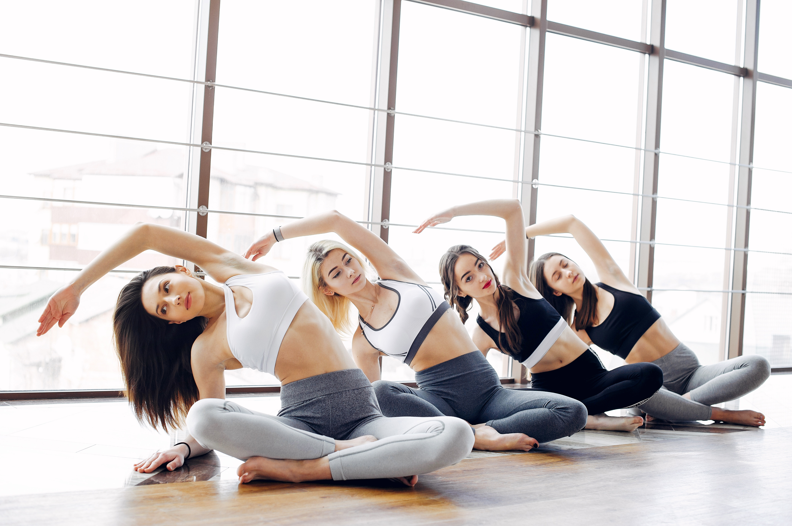
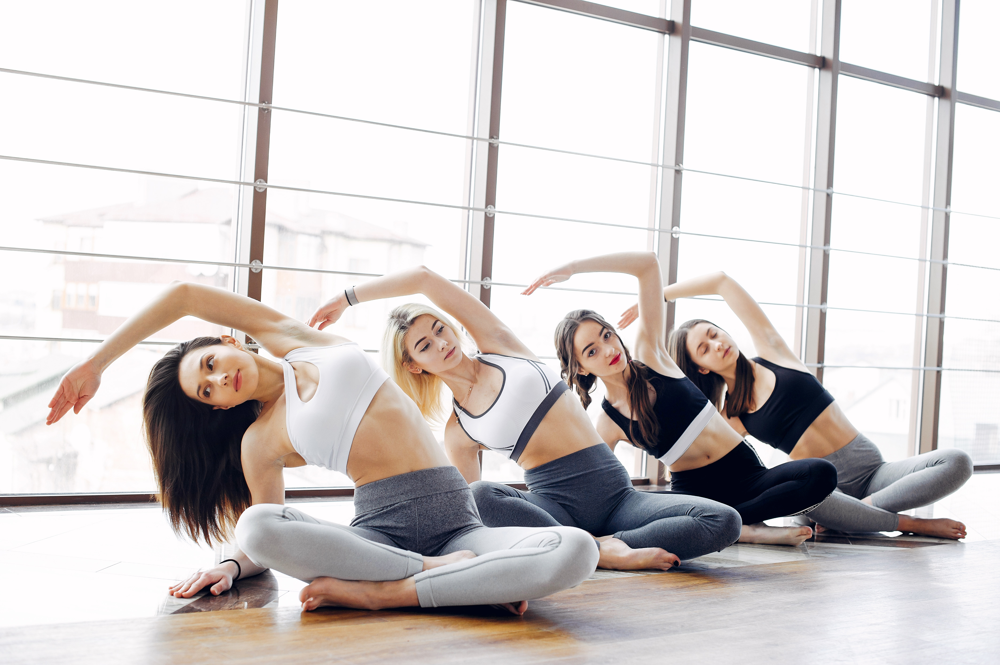
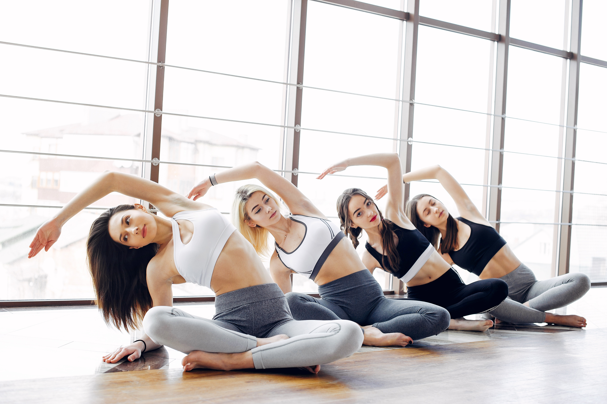
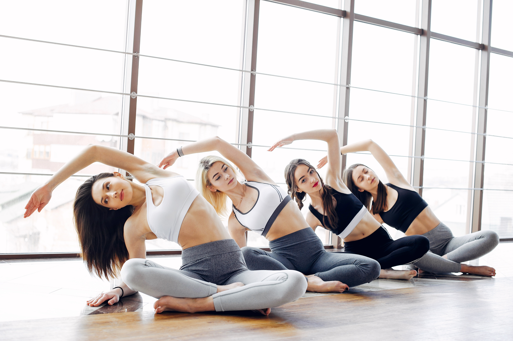

 

Zumba is an exercise program that fuses Latin and global music with dance and aerobic choreography, providing a fun, full-body workout with numerous physical and mental health benefits, including weight loss, improved cardiovascular health, boosted mood and reduced stress, enhanced coordination and balance, and increased muscle tone. The engaging, upbeat atmosphere and music also foster a sense of community and can provide a healthy, sustainable way to increase overall physical activity
Weight Loss: The high-energy, calorie-burning nature of Zumba, combined with its intense aerobic activity, makes
it an effective workout for supporting weight management.
Cardiovascular Health: The rhythmic movements and fast-paced routines strengthen the heart, improve circulation,
and increase stamina and endurance.
Muscle Toning: Through movements like squats, lunges, and arm motions, Zumba engages multiple muscle groups,
including the core, legs, arms, and glutes, leading to improved muscle tone and strength.
Improved Coordination & Balance: The varied steps and quick changes in direction required during a class help to
develop body control, motor skills, and overall coordination